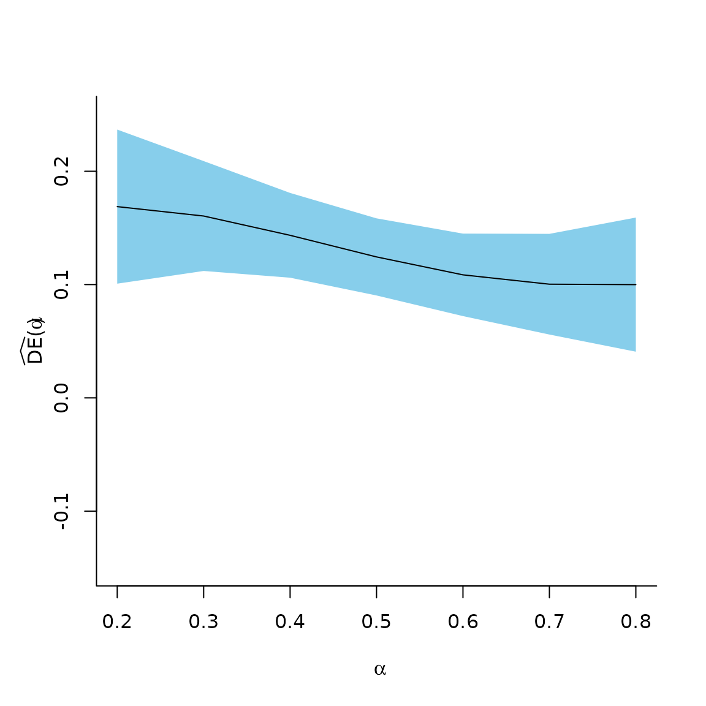
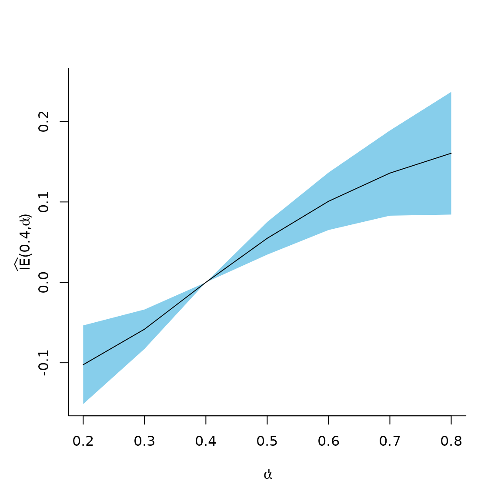
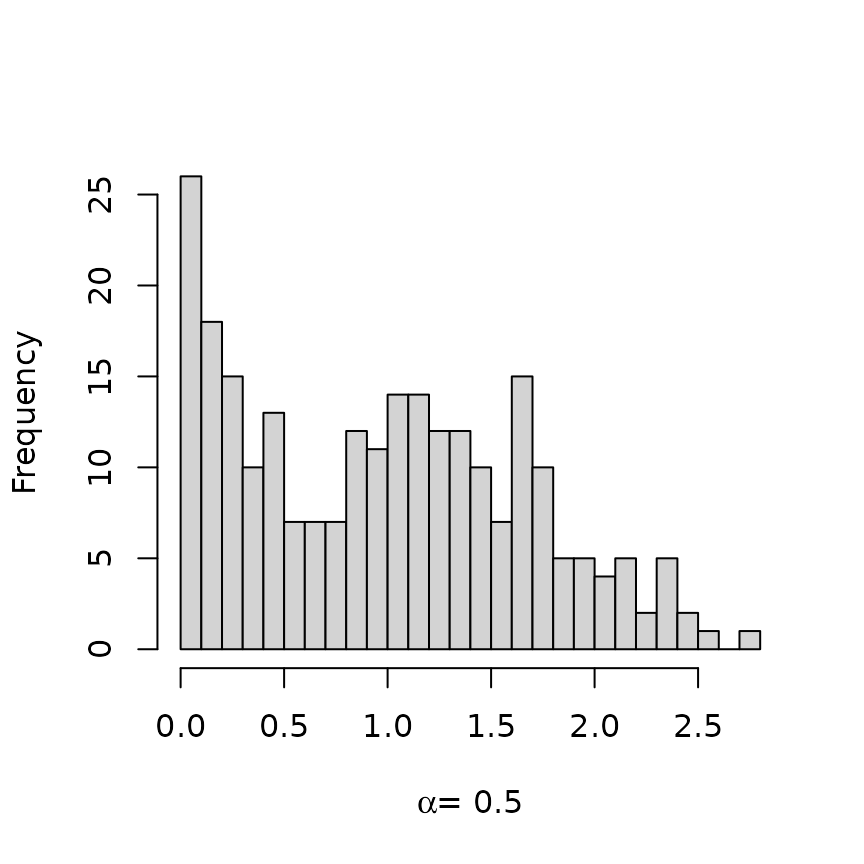

inferference Vignetteinferference_intro.RmdFor a complete overview of the software, please refer to the Journal of Statistical Software paper: “A Recipe for inferference: Start with Causal Inference. Add Interference. Mix Well with R.”
The list below details the arguments for interference,
the primary function in inferference. Special attention
should be given to the propensity_integrand and
formula arguments.
formula: formula used to define the causal model.
formula has a minimum of 4 parts, separated by
| and ~ in a specific structure:
outcome | exposure ~ covariates | group. The order matters,
and the pipes (|) split the data frame into corresponding
pieces . The exposure ~ covariates piece is passed as a
single formula to the chosen model_method (defined below)
used to estimate or fix propensity parameters.
outcome | exposure ~ covariates + (1|group) | group. In
this instance, the group variable appears twice.outcome | exposure | participation ~ covariates | group.propensity_integrand: a function, which may be created
by the user, used to compute the IP weights. This defaults to the
function logit_integrand(), which calculates the product of
inverse logits for individuals in a group:
,
where
,
is a group-level random effect,
is a
density, and
is a known constant. In an observational study typically
.
The examples below include individual randomized experiments in which
case
denotes the randomization probability among trial participants.
logit_integrand() is the integrand of ,
logit_integrand() ignores the random effect. IP weights are
computed by numerically integrating propensity_integrand
over the random effect distribution using by
stats::integrate() to which arguments may be passed via
... (see below). The default logit_integrand()
also takes the following argument that can be passed via the
... argument in interference():
randomization: a scalar. This is the
in the formula just above. It defaults to 1 in the case that a
participation vector is not included. The vaccine study
example below demonstrates use of this argument.loglihood_integrand: a function, which may be created
by the user, that defines the log likelihood of the propensity score
model. This should generally be the same function as
`propensity_integrand}, which is the default.allocations: a vector of values in
.
Increasing the number of elements of the allocation vector increases
computation time; however, a larger number of allocations will make
plotted effect estimates smoother. A minimum of two allocations is
required.data: the analysis data frame. This must include all
the variables defined in the `formula}.model_method: the method used to estimate or set the
propensity model parameters. Must be one of 'glm',
'glmer', or 'oracle'. For a fixed effects only
model use 'glm', or to include random effects use
lme4’s 'glmer' (Bates
et al. 2014). logit_integrand only supports a single
random effect for the grouping variable, corresponding to
.
When the propensity parameters are known (as in simulations) or if
estimating parameters for the propensity model outside of
interference, use the 'oracle' option. See
model_options for details on how to pass the oracle
parameters. Defaults to 'glmer'}.model_options: a list of options passed to the function
in model_method. Defaults to
list(family = binomial(link = 'logit')). When
model_method = 'oracle', the list must have two elements,
fixed.effects and random.effects. If the model
does not include random effects, set
random.effects = NULL.causal_estimation_method: currently only supports and
defaults to 'ipw'.causal_estmation_options: a list with a single item
variance_estimation, which is either 'naive'
or 'robust'. Defaults to 'robust'.conf.level: level for confidence intervals. Defaults to
0.95.rescale.factor: a scalar multiplication factor by which
to rescale outcomes and effects. Defaults to 1.integrate_allocation: indicator of whether the
integrand function uses the allocation parameter. Defaults to TRUE....: used to pass additional arguments to internal
functions such as numDeriv::grad() or
stats::integrate(). Arguments can also be passed to the
propensity_integrand and loglihood_integrand
functions.An interference() call results in an S3
object of class interference which contains:
estimates: a data frame of causal effect
estimates;models$propensity_model: the glm or
glmer object;summary: a list of objects summarizing the causal model
such as the number of groups, number of allocations, and the formula
used in the interference call;weights: (# of groups)
(# of allocations) matrix of group-level weights:
If variance_estimation = 'robust', then the object also
includes:
weightd: (# of groups)
(# of allocations)
(# of parameters) array of weights computed using derivatives of the
propensity function with respect to each parameter;scores: (# of groups)
(# of parameters) matrix of derivatives of the log likelihood.This section illustrates the use of inferference with an
example drawn from vaccine research. The package includes a single
dataset based on the same set of parameters used in the simulation study
by Perez-Heydrich et al. (2014). The
vaccinesim dataset consists of 3000 units in 250 groups and
contains two covariates (X1 = age in decades and
X2 = distance to river), a vaccination indicator
(A), a participation indicator (B), a binary
outcome (Y) indicating cholera infection (1 yes, 0 no), and
the unit’s group.
## Y X1 X2 A B group
## 1 1 5.3607405 1.715527 0 0 1
## 2 0 0.1964597 1.730802 0 1 1
## 3 0 0.4846243 1.769546 1 1 1
## 4 0 0.8012977 1.715527 0 1 1
## 5 0 2.1426629 1.772158 1 1 1
## 6 0 1.2861017 1.715527 0 1 1Like the original study (Ali et al.
2005) that inspired the simulation, individuals were randomized
to vaccine with a known probability of
,
but subjects could opt to not participate in the trial. In essence,
there are both experimental and observational aspects to the data. The
interference function handles this design when
logit_integrand’s randomization argument is
used and a participation variable is included in the formula.
> example1 <- interference(
+ formula = Y | A | B ~ X1 + X2 + (1|group) | group,
+ allocations = c(.3, .45, .6),
+ data = vaccinesim,
+ randomization = 2/3,
+ method = 'simple')The only arguments required for interference to run are
formula, allocations, and data.
When using the `robust' method (the default) to compute the
variance, the internal workings call numDeriv::grad (Gilbert and Varadhan 2012) and
stats::integrate frequently. The option
method = 'simple' greatly speeds up the
numDeriv::grad function. For more accurate derivatives,
leave out this option. See ?numDeriv::grad for more
options.
The print.interference function provides an overview of
the causal effect estimates, estimated standard errors, and Wald-type
confidence intervals. In the output, alpha1 and
alpha2 refer to
and
,
while trt1 and trt2 refer to
and
,
respectively.
## --------------------------------------------------------------------------
## Model Summary
## --------------------------------------------------------------------------
## Formula: Y | A | B ~ X1 + X2 + (1 | group) | group
## Number of groups: 250
## 3 allocations were used from 0.3 (min) to 0.6 (max)
## --------------------------------------------------------------------------
## Causal Effect Summary
## Confidence level: 0.95
## Variance method: robust
## --------------------------------------------------------------------------
##
## Direct Effects
## alpha1 trt1 alpha2 trt2 estimate std.error conf.low conf.high
## 0.30 0 0.30 1 0.1605 0.02474 0.11202 0.2090
## 0.60 0 0.60 1 0.1086 0.01857 0.07219 0.1450
## 0.45 0 0.45 1 0.1339 0.01778 0.09904 0.1687
##
## Indirect Effects
## alpha1 trt1 alpha2 trt2 estimate std.error conf.low conf.high
## 0.30 0 0.60 0 0.15907 0.02617 0.10777 0.2104
## 0.30 0 0.45 0 0.08657 0.01732 0.05263 0.1205
## 0.45 0 0.60 0 0.07250 0.01408 0.04490 0.1001
##
## Total Effects
## alpha1 trt1 alpha2 trt2 estimate std.error conf.low conf.high
## 0.30 0 0.60 1 0.2677 0.02435 0.2199 0.3154
## 0.30 0 0.45 1 0.2205 0.02469 0.1721 0.2688
## 0.45 0 0.60 1 0.1811 0.01841 0.1450 0.2172
##
## Overall Effects
## alpha1 trt1 alpha2 trt2 estimate std.error conf.low conf.high
## 0.30 NA 0.60 NA 0.17607 0.019247 0.13835 0.2138
## 0.30 NA 0.45 NA 0.09867 0.014207 0.07083 0.1265
## 0.45 NA 0.60 NA 0.07740 0.008981 0.05980 0.0950
##
## --------------------------------------------------------------------------The utility functions return selected effect estimates.
## alpha1 trt1 alpha2 trt2 estimate std.error conf.low conf.high
## 1 0.3 0 0.3 1 0.1605036 0.02473782 0.1120184 0.2089888## alpha1 trt1 alpha2 trt2 estimate std.error conf.low conf.high
## 1 0.3 0 0.30 0 0.00000000 0.00000000 0.00000000 0.0000000
## 2 0.3 0 0.45 0 0.08656992 0.01731878 0.05262574 0.1205141
## 3 0.3 0 0.60 0 0.15906887 0.02617398 0.10776882 0.2103689Plots of effect estimates over a range of
levels may be helpful in summarizing results. Perez-Heydrich et al. (2014) present several
such graphical displays. Here we demonstrate how to generate similar
plots of effect estimates using inferference.
First, we estimate the effects over a dense sequence of allocations so that lines will be smooth.
> example2 <- interference( formula = Y | A | B ~ X1 + X2 + (1|group) | group,
+ allocations = seq(.2, .8, by = .1),
+ data = vaccinesim, randomization = 2/3, method = 'simple')In the plots, we present the direct and indirect effect estimates over this range of allocations. For direct effects, a simple scatterplot showing the point-wise confidence intervals suffices. One approach with indirect effects fixes and plots estimates over a range of , whereas a contour plot displays all pairwise comparisons over a range of allocation strategies.
> deff <- direct_effect(example2)
> x <- deff$alpha1
> y <- as.numeric(deff$estimate)
> u <- as.numeric(deff$conf.high)
> l <- as.numeric(deff$conf.low)
> plot(c(min(x), max(x)), c(-.15, .25), type = 'n', bty = 'l',
+ xlab = expression(alpha), ylab = '' )
> title(ylab = expression(widehat(DE) * "(" * alpha * ")"),
+ line = 2)
> polygon(c(x, rev(x)), c(u, rev(l)), col = 'skyblue', border = NA)
> lines(x, y, cex = 2)
> ieff.4 <- ie(example2, allocation1 = .4)
> x <- ieff.4$alpha2
> y <- as.numeric(ieff.4$estimate)
> u <- as.numeric(ieff.4$conf.high)
> l <- as.numeric(ieff.4$conf.low)
> plot(c(min(x), max(x)),c(-.15, .25), type = 'n', bty = 'l',
+ xlab = expression(alpha * "'"), ylab = '')
> title(ylab = expression(widehat(IE) * "(" * 0.4 * "," * alpha * "'" * ")"),
+ line = 2)
> polygon(c(x, rev(x)), c(u, rev(l)), col = 'skyblue', border = NA)
> lines(x, y, cex = 2)
IPW estimators are known to be unstable if the weights range greatly.
The package includes a basic utility to check the performance of the
group-level weights,
,
for multiple allocations. The function diagnose_weights
plots histograms of weights for chosen allocation levels. If the
allocations argument is left NULL, the
function plots histograms for five allocation levels used the
interference call. The plot below shows the resulting
histogram for a single allocation. The analyst should examine groups
with extreme weights, which may unduly influence population-level
estimates.

The preceding example used the default logit_integrand
function to define the group-level propensities. The following example
demonstrates how to customize the propensity score function.
Nickerson (2008) reported an experiment on voter behavior to examine peer-to-peer indirect effects on voting participation. The experiment randomized households with only two registered voters in Denver and Minneapolis to receive one of three assignments: voting encouragement, recycling encouragement, or nothing. Canvassers knocked on doors of households randomized to the voting or recycling groups a week before the 2002 primary. If a registered voter answered the door, the canvassers delivered a scripted message about voting (treatment) or recycling (control). The researchers used voter turnout records to determine if each member of the household then voted in the election. Nickerson was interested in the potential spillover effect of the voting encouragement to the untreated individual via the treated individual. From analysis of the observed data, he concluded there was a “secondary effect” where the household members not contacted by the canvassers voted more often in the treatment groups compared to the control groups.
The dataset voters contains information for 3861
households, 2549 in Denver and 1312 in Minneapolis, including covariates
such as age, gender, previous voting history, and party affiliation. Our
estimand of interest involves average voting outcomes when households
receive voting encouragement compared to when household receive the
recycling message, hence we exclude households not contacted by
canvassers. We also exclude the single household where a canvasser
appears to have contacted both registered voters.
> voters <- within(voters, {
+ treated = (treatment == 1 & reached == 1) * 1
+ c_age = (age - mean(age))/10
+ })
> reach_cnt <- tapply(voters$reached, voters$family, sum)
> voters <- voters[!(voters$family %in% names(reach_cnt[reach_cnt > 1])), ]
> voters <- voters[voters$hsecontact == 1, ]Unlike the vaccine study example, in this data set randomization occurred at the group level but individual level treatment was not randomized. With only two subjects, is the treatment allocation for group and is the matrix of individuals’ covariate matrices for group . Let be indicators of being reached by a canvasser in group . Since we only consider households where someone answered the door, and . Let . Let be the indicator that group is randomized to treatment (1) or control (0). By design, . Since , can arbitrarily be defined in terms of either household member. By convention we use the first subject (subject one) of each group found in the dataset. Among treated groups, the probability of subject one being treated is the probability that a canvasser reached subject one. That is, . Thus, the group-level propensity can be expressed:
Thus,
is sufficient to determine the group-level propensity. If we know
whether or not the first subject was reached by a canvasser, then we
know if the second was. Therefore, we can estimate parameters for
with a dataset that includes only subject one from each group. To do
this, we must estimate the parameters outside of
inferference and use model_method = 'oracle'.
We include centered age (in decades) in the propensity model for
demonstration purposes.
Custom propensity_integrand and
loglihood_integrand functions must have at least one
argument:
b: the first argument is the variable for which the
integrate function computes the integral. As in this
example, the function can be written so that the integral evaluates to 1
and has no effect.For example, the following function will fix the group-level
propensity to 0.5 for all groups when
variance_estimation = "naive":
For more realistic models, additional arguments may be passed to the custom function:
X: the covariate matrix (determined by the `formula})
for the
th
groupA: the vector of treatment indicators for the
th
groupparameters: vector of estimated parameters from the
model_method * allocation: the allocation
level for which the propensity is currently being estimated...: other arguments can be passed via the ellipsis in
interference Now we have the pieces to write the propensity
function for the voting example.> household_propensity <- function(b, X, A,
+ parameters,
+ group.randomization = .5){
+ if(!is.matrix(X)){
+ X <- as.matrix(X)
+ }
+ if(sum(A) == 0){
+ pr <- group.randomization
+ } else {
+ X.1 <- X[1 ,]; A.1 <- A[1]
+ h <- plogis(X.1 %*% parameters)
+ pr <- group.randomization * dbinom(A.1, 1, h)
+ }
+ out <- pr * dnorm(b)
+ out
+ }The influence of the door opener on the non-door opener’s voting behavior corresponds to an indirect effect. Though the Bernoulli-type parametrization of the estimands allows us to look at a range of allocations, makes the sensible comparison between a world where individuals receive a voting message with probability to a world where individuals have zero probability of receiving the voting message.
> example3 <- interference(
+ formula = voted02p | treated | reached ~ c_age | family,
+ propensity_integrand = 'household_propensity',
+ data = voters,
+ model_method = 'oracle',
+ model_options = list(fixed.effects = coef.voters, random.effects = NULL),
+ allocations = c(0, .5),
+ integrate_allocation = FALSE,
+ causal_estimation_options = list(variance_estimation = 'robust'),
+ conf.level = .9)## estimate conf.low conf.high
## 1 0.03151501 0.002290586 0.06073944The point estimate suggests an individual receiving the voting encouragement increases the voting likelihood of the other household member by 3.2%. The 90% confidence interval excludes zero, indicating a significant indirect effect corroborating the analysis in Nickerson (2008).
For comparison, suppose that a flip of a fair coin determined which
registered voter opened the door. We exclude age as a covariate and
instead set
.
Here we assume to know the propensity score, so we use
variance_estimation = 'naive'.
> example4 <- interference(
+ formula = voted02p | treated | reached ~ 1 | family,
+ propensity_integrand = 'household_propensity',
+ data = voters,
+ model_method = 'oracle',
+ model_options = list(fixed.effects = 0, random.effects = NULL),
+ allocations = c(0, .5),
+ integrate_allocation = FALSE,
+ causal_estimation_options = list(variance_estimation = 'naive'),
+ conf.level = .9)## estimate conf.low conf.high
## 1 0.03144654 0.002209019 0.06068406Examining the group-level weights may help diagnose coding errors in the propensity score function. In the case of a fixed probability as in `example4}, the propensity weights are easily computed by hand. For example, for ,
which we can confirm the software computed.
> G <- tapply(voters[1:12, 'treated'], voters[1:12, 'family'], sum)
> W <- head(example4[["weights"]])[, 2]
> cbind(G, W)## G W
## 2 1 1.0
## 4 0 0.5
## 5 0 0.5
## 6 0 0.5
## 9 1 1.0
## 10 0 0.5We show in this section how computation of the group-level weights may affect estimation as the number of individuals in groups grows. To illustrate, consider the IPW estimator of the overall effect, which weights individual outcomes in group with:
or equivalently,
or,
While mathematically equivalent, these weights may be computationally
dissimilar. In the case of
,
the product term within the integral entails multiplying probabilities
and thus will tend to 0 as
increases, causing the denominator of
to get arbitrarily large. In contrast, the product term in
entails multiplying values which may be less than or greater than 1 and
thus tends to be less susceptible to numerical instability. Summing
or
and then exponentiating the result may provide greater numerical
stability. Internally, inferference uses
.
When group sizes are small, the differences between these weights tend to be infinitesimal, but as group sizes grow the differences become important. To be specific, consider the code below comparing , , and for increasing group sizes where , all units are treated, there is no random effect, and is fixed at .
> compare_weights <- function(n, alpha = .5, h = .5){
+ pi <- rep(alpha, n)
+ PrA <- rep(h, n)
+ c(w1 = prod(pi)/prod(PrA),
+ w2 = 1/prod(PrA/pi),
+ w3 = 1/exp(sum(log(PrA/pi))))
+ }
> n <- c(50, 100, 500, 1074, 1075, 10000)
> cbind(n, t(sapply(n, FUN = compare_weights)))## n w1 w2 w3
## [1,] 50 1 1 1
## [2,] 100 1 1 1
## [3,] 500 1 1 1
## [4,] 1074 1 1 1
## [5,] 1075 NaN 1 1
## [6,] 10000 NaN 1 1For group sizes up to
there is no difference, but when
reaches
,
returns NaN while
and
correctly return 1.
Perez-Heydrich et al. (2014) used to calculate weights, but 15 groups in their analysis had over 1000 subjects. These groups had missing values for weights for all the values of considered and were excluded from computing the average IPW estimate. Rather than computing the average IPW across 700 groups, they inadvertently took the average across 685 groups. Correcting the estimates by using or did not alter the conclusions in this case, but analysts should be aware of this issue when dealing with large groups.